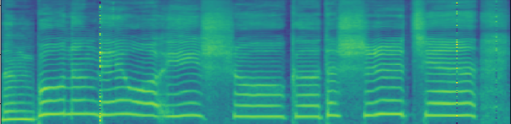
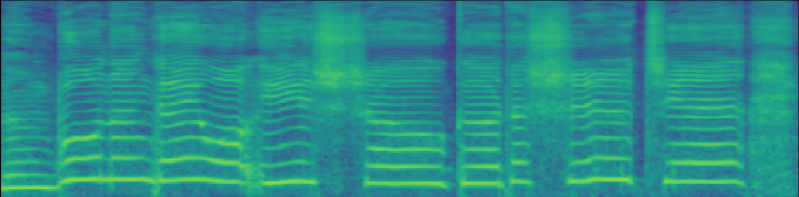

1. Introduction
Singing voice synthesis (SVS) is an active research area in speech and audio processing, which has various applications in the music industry, entertainment, and education. SVS aims to generate high-quality singing voices from a given music score, generally including lyrics, MIDI notes, etc. SVS is challenging due to the complex nature of human singing voices, which exhibit a wide range of pitch, tempo, vibrato, and articulation variations. Many deep learning-based models have achieved success on the SVS task. The current state-of-the-art deep learning-based SVS model is the diffusion-based SVS model. Despite the diffusion-based SVS model achieving encouraging results, the efficiency is not satisfying, which is reflected in that the sampling speed is not fast. In this work, we proposed building the Poisson flow-based SVS model. Experiment results show that our SVS model has faster synthesis speed and better model scale tolerance than the state-of-the-art diffusion-based SVS model.
2. Experimental Results (Kiritan)
| Kiritan (test) |
3. Experimental Results (Standard)
| GT | Diffsinger 44k (NFE = 100) |
Proposed Poisson flow-based acoustic model 44k (NFE = 35) |
4. Experimental Results (Large)
| GT | Diffsinger 44k | PoissionSinger 44k |
5. Visualization of synthesized waveform. (Standard)

GT

Diffsinger

Proposed Poisson flow-based acoustic model
| GT | Diffsinger 44k | Proposed Poisson flow-based acoustic model 44k |